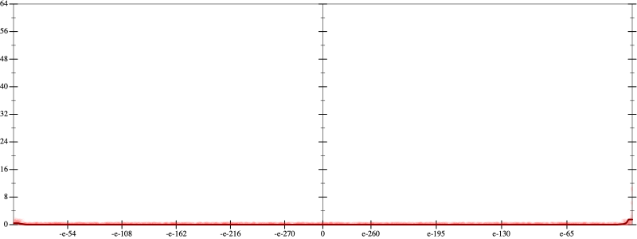
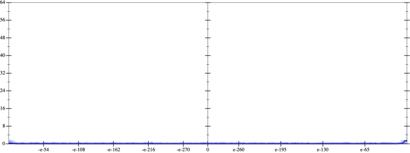
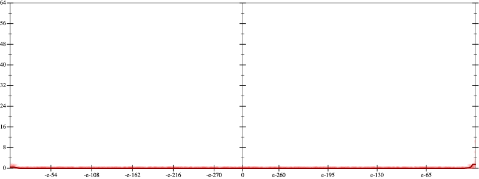
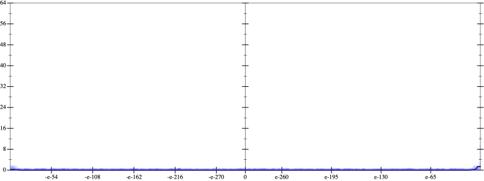

Initial program 0.0
\[\left(\left(\left(\left(\left(\left(\left(\left(\left(\left(\left(\left(\left(\left(\left(\left(1.0 + -33.0 \cdot x\right) + 264.0 \cdot \left(x \cdot x\right)\right) + -909.333333 \cdot \left(\left(x \cdot x\right) \cdot x\right)\right) + 1705.0 \cdot \left(\left(\left(x \cdot x\right) \cdot x\right) \cdot x\right)\right) + -1977.8 \cdot \left(\left(\left(\left(x \cdot x\right) \cdot x\right) \cdot x\right) \cdot x\right)\right) + 1538.288889 \cdot \left(\left(\left(\left(\left(x \cdot x\right) \cdot x\right) \cdot x\right) \cdot x\right) \cdot x\right)\right) + -847.628571 \cdot \left(\left(\left(\left(\left(\left(x \cdot x\right) \cdot x\right) \cdot x\right) \cdot x\right) \cdot x\right) \cdot x\right)\right) + 344.349107 \cdot \left(\left(\left(\left(\left(\left(\left(x \cdot x\right) \cdot x\right) \cdot x\right) \cdot x\right) \cdot x\right) \cdot x\right) \cdot x\right)\right) + -106.280589 \cdot \left(\left(\left(\left(\left(\left(\left(\left(x \cdot x\right) \cdot x\right) \cdot x\right) \cdot x\right) \cdot x\right) \cdot x\right) \cdot x\right) \cdot x\right)\right) + 25.507341 \cdot \left(\left(\left(\left(\left(\left(\left(\left(\left(x \cdot x\right) \cdot x\right) \cdot x\right) \cdot x\right) \cdot x\right) \cdot x\right) \cdot x\right) \cdot x\right) \cdot x\right)\right) + -4.848503 \cdot \left(\left(\left(\left(\left(\left(\left(\left(\left(\left(x \cdot x\right) \cdot x\right) \cdot x\right) \cdot x\right) \cdot x\right) \cdot x\right) \cdot x\right) \cdot x\right) \cdot x\right) \cdot x\right)\right) + 0.740743 \cdot \left(\left(\left(\left(\left(\left(\left(\left(\left(\left(\left(x \cdot x\right) \cdot x\right) \cdot x\right) \cdot x\right) \cdot x\right) \cdot x\right) \cdot x\right) \cdot x\right) \cdot x\right) \cdot x\right) \cdot x\right)\right) + -0.092045 \cdot \left(\left(\left(\left(\left(\left(\left(\left(\left(\left(\left(\left(x \cdot x\right) \cdot x\right) \cdot x\right) \cdot x\right) \cdot x\right) \cdot x\right) \cdot x\right) \cdot x\right) \cdot x\right) \cdot x\right) \cdot x\right) \cdot x\right)\right) + 0.009392 \cdot \left(\left(\left(\left(\left(\left(\left(\left(\left(\left(\left(\left(\left(x \cdot x\right) \cdot x\right) \cdot x\right) \cdot x\right) \cdot x\right) \cdot x\right) \cdot x\right) \cdot x\right) \cdot x\right) \cdot x\right) \cdot x\right) \cdot x\right) \cdot x\right)\right) + -0.000793 \cdot \left(\left(\left(\left(\left(\left(\left(\left(\left(\left(\left(\left(\left(\left(x \cdot x\right) \cdot x\right) \cdot x\right) \cdot x\right) \cdot x\right) \cdot x\right) \cdot x\right) \cdot x\right) \cdot x\right) \cdot x\right) \cdot x\right) \cdot x\right) \cdot x\right) \cdot x\right)\right) + 5.6 \cdot 10^{-05} \cdot \left(\left(\left(\left(\left(\left(\left(\left(\left(\left(\left(\left(\left(\left(\left(x \cdot x\right) \cdot x\right) \cdot x\right) \cdot x\right) \cdot x\right) \cdot x\right) \cdot x\right) \cdot x\right) \cdot x\right) \cdot x\right) \cdot x\right) \cdot x\right) \cdot x\right) \cdot x\right) \cdot x\right)\right) + -3 \cdot 10^{-06} \cdot \left(\left(\left(\left(\left(\left(\left(\left(\left(\left(\left(\left(\left(\left(\left(\left(x \cdot x\right) \cdot x\right) \cdot x\right) \cdot x\right) \cdot x\right) \cdot x\right) \cdot x\right) \cdot x\right) \cdot x\right) \cdot x\right) \cdot x\right) \cdot x\right) \cdot x\right) \cdot x\right) \cdot x\right) \cdot x\right)\]
Applied simplify0.0
\[\leadsto \color{blue}{\left(\left(\left(\left(\left(x \cdot x\right) \cdot \left(x \cdot x\right)\right) \cdot \left(\left(x \cdot x\right) \cdot \left(x \cdot x\right)\right)\right) \cdot \left(\left(x \cdot x\right) \cdot 25.507341\right) + \left(\left(\left(\left(\left(x \cdot x\right) \cdot \left(x \cdot x\right)\right) \cdot \left(x \cdot -1977.8\right) + \left(\left(x \cdot x\right) \cdot \left(x \cdot x\right)\right) \cdot \left(\left(x \cdot x\right) \cdot 1538.288889\right)\right) + \left(\left(\left(1705.0 \cdot x\right) \cdot {x}^{3} + \left(x \cdot -33.0 + 1.0\right)\right) + \left(\left(x \cdot x\right) \cdot \left(x \cdot -909.333333\right) + x \cdot \left(x \cdot 264.0\right)\right)\right)\right) + \left(\left(\left({x}^{3} \cdot {x}^{3}\right) \cdot \left(\left(x \cdot x\right) \cdot 344.349107\right) + \left(-847.628571 \cdot x\right) \cdot \left({x}^{3} \cdot {x}^{3}\right)\right) + \left(-106.280589 \cdot x\right) \cdot \left(\left(\left(x \cdot x\right) \cdot \left(x \cdot x\right)\right) \cdot \left(\left(x \cdot x\right) \cdot \left(x \cdot x\right)\right)\right)\right)\right)\right) + \left(\left(\left({x}^{3} \cdot {x}^{3}\right) \cdot {x}^{3}\right) \cdot \left(\left(x \cdot x\right) \cdot -4.848503\right) + \left(\left(-0.092045 \cdot x\right) \cdot \left(\left(\left(\left(x \cdot x\right) \cdot \left(x \cdot x\right)\right) \cdot \left(\left(x \cdot x\right) \cdot \left(x \cdot x\right)\right)\right) \cdot \left(\left(x \cdot x\right) \cdot \left(x \cdot x\right)\right)\right) + \left(\left({x}^{3} \cdot {x}^{3}\right) \cdot \left(\left(x \cdot x\right) \cdot \left(x \cdot x\right)\right)\right) \cdot \left(\left(x \cdot x\right) \cdot 0.740743\right)\right)\right)\right) + \left(\left(\left(\left(\left({x}^{3} \cdot {x}^{3}\right) \cdot \left(\left(x \cdot x\right) \cdot \left(x \cdot x\right)\right)\right) \cdot \left(\left(x \cdot x\right) \cdot \left(x \cdot x\right)\right)\right) \cdot \left(x \cdot -0.000793\right) + \left(\left(\left(\left(x \cdot x\right) \cdot \left(x \cdot x\right)\right) \cdot \left(\left(x \cdot x\right) \cdot \left(x \cdot x\right)\right)\right) \cdot \left(\left(x \cdot x\right) \cdot \left(x \cdot x\right)\right)\right) \cdot \left(\left(x \cdot x\right) \cdot 0.009392\right)\right) + \left(\left(-3 \cdot 10^{-06} \cdot x\right) \cdot \left(\left(\left(\left(\left(x \cdot x\right) \cdot \left(x \cdot x\right)\right) \cdot \left(\left(x \cdot x\right) \cdot \left(x \cdot x\right)\right)\right) \cdot \left(\left(x \cdot x\right) \cdot \left(x \cdot x\right)\right)\right) \cdot \left(\left(x \cdot x\right) \cdot \left(x \cdot x\right)\right)\right) + \left(\left(\left({x}^{3} \cdot {x}^{3}\right) \cdot \left(\left(x \cdot x\right) \cdot \left(x \cdot x\right)\right)\right) \cdot \left(\left(x \cdot x\right) \cdot \left(x \cdot x\right)\right)\right) \cdot \left(\left(x \cdot x\right) \cdot 5.6 \cdot 10^{-05}\right)\right)\right)}\]
 
